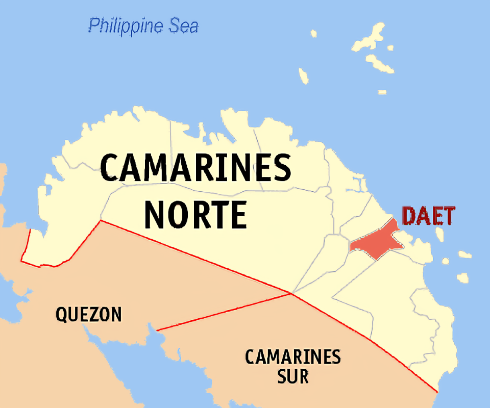
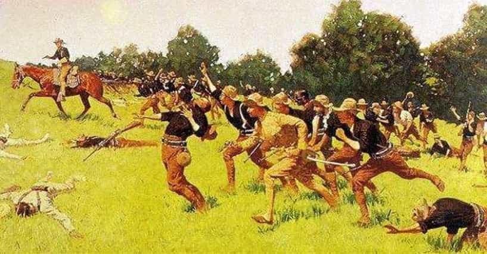

Spanish Period
when Spanish conquisitador Juan De Salcedo set foot in the northern portion of the Bicol Peninsula in 1583, he couldn't have chosen a more appropriate name when he christened it "Camarines".
Separation

He saw numerous barns in farms and along riverbanks, which led him to call the place Camarines for "storehouse". Camarines Nortewas created on April 15, 1920 through Orden Ejecutiva Numero 22, separating it from its twin province of Camarines Sur.
Daet Revolt

April 14–17, 1898 - Local members of the Katipunan led by Ildefonso Moreno and other patriots staged an uprising against the Spanish authorities here who have fortified themselves in the house of one Florencio Arana, a Spanish merchant and a long time resident of Daet. Sporadic encounters started on April 14 until April 16 when the rebels occupied Daet and surrounded the Spaniards in the house of Arana. But the Katipuneros failed to repulse the reinforcements which arrived in Barra (now Mercedes) from Nueva Caceres on April 17. Said reinforcements broke the siege of Daet. This resulted in the death and/or execution of many patriots, including Ildefonso Moreno, Tomas Zaldua and his two sons, Jose Abaño, Domingo Lozada and Aniceto Gregorio, among others. While the Daet revolt collapsed, it signaled the start of a series of rebellion throughout the Bicol region.
By virtue of Act 2809 of March 3, 1919, Governor General F. B. Harrison separated Camarines Norte from Camarines Sur with the installation of Don Miguel R. Lukban as its first governor. "In functional sense, April 15, 1920, was the date of the organization of Camarines Norte, as directed by Executive Order No. 22 dated March 20, 1920, in conformity with the provisions of Act No. 2809," according to Serafin D. Quiason, former chairman of the National Historical Institute (NHI).